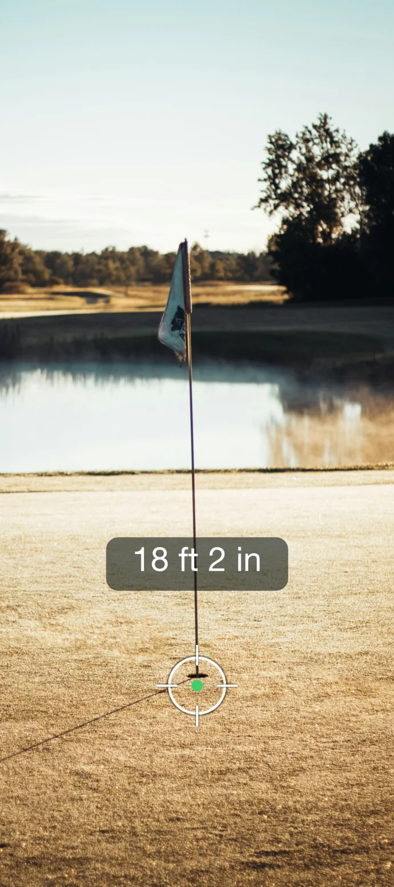

Measure closest to the pin with your camera
Jul 3, 2026
The closest-to-the-pin hole has a ritual: a little stake in the ground next to the best ball so far, so the next group knows what they're up against. It works, but it only answers one question (closer or not), and only once you've already hit.
Squabbit now puts a real number on it. When you enter a closest-to-the-pin result, the hole-competition dialog has a "Measure with camera" option: stand at your ball, point your camera at the flag, and Squabbit reads the distance.

Know the number to beat
Because every measurement lands on the leaderboard, the next group isn't squinting at a stake: they can see exactly what distance they have to beat before they even hit their shot. That's the fun part. Standing on the tee knowing you need to get inside 8 feet 4 inches changes the shot.
Point, shoot, done
Measuring is genuinely point-and-shoot: stand at your ball, aim the camera at the flag, and the distance appears. No walking required, no putts disturbed, no guessing. And if your phone can't get a depth read, there's a fallback that always works: walk from the ball to the pin and your phone measures as you go.
Straight into the results
The measured distance doesn't just sit on the screen. It feeds directly into the closest-to-the-pin results for the competition, in whatever units the competition is configured to use (feet, metres, you name it). The current leader updates, everyone in the event can see the standing, and there's nothing to transcribe or round off.
Works on both platforms
Camera measuring works on iPhones and Android phones alike, with no special hardware needed (iPhones with LiDAR get an extra-quick read, but a regular Android camera does the job too). It doesn't matter whose phone is handy when the group reaches the CTP hole: someone can measure it on the spot.
Next time your event has a closest-to-the-pin hole, skip the stake. Point your camera, get the number, and give everyone behind you a target to shoot at.